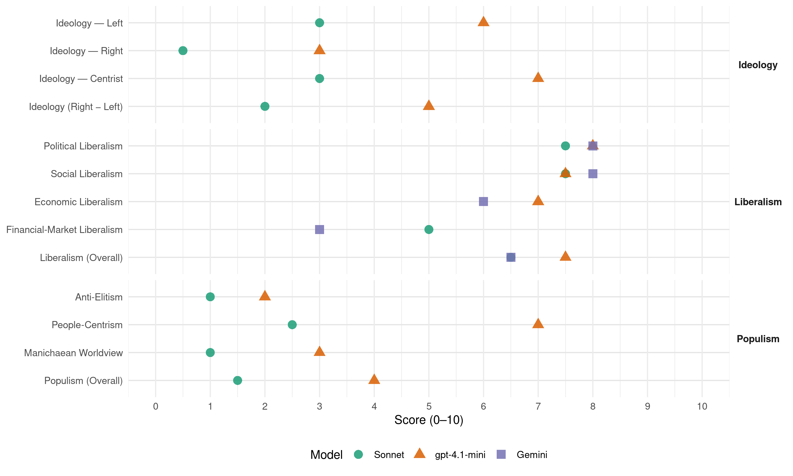

CDA (Netherlands, 1977)
manifesto_id 22521_197705
Get full text: This site shows derived annotations and short verbatim quotes only. The full manifesto text is © Manifesto Project / WZB — obtain it via manifesto-project.wzb.eu using the manifesto_id above.
Headline scores
| Dimension | Sonnet | gpt-4.1-mini | Gemini |
|---|---|---|---|
| Populism (Overall) | 1.5 | 4.0 | – |
| Anti-Elitism | 1.0 | 2.0 | – |
| People-Centrism | 2.5 | 7.0 | – |
| Manichaean Worldview | 1.0 | 3.0 | – |
| Ideology (Right − Left) | 2.0 | 5.0 | – |
| Liberalism (Overall) | 6.5 | 7.5 | 6.5 |
| Political Liberalism | 7.5 | 8.0 | 8.0 |
| Social Liberalism | 7.5 | 7.5 | 8.0 |
| Economic Liberalism | – | 7.0 | 6.0 |
| Financial-Market Liberalism | 5.0 | – | 3.0 |
Evidence per dimension
Economic Liberalism
Gemini · score 6.0 · verified · chunk 1
“vrije spel der maatschappelijke krachten”
te veel met ons leven heeft bemoeid en doen alsof bij terugkeer tot het vrije spel der maatschappelijke krachten de oplossing vanzelf wel weer in zicht komt?
Gemini · score 4.0 · mixed · chunk 2
“nieuwe internationale economische orde”
Er is een beweging naar een nieuwe internationale economische orde gaande. Daarin moet gezocht worden naar gelijkwaardigheid
gpt-4.1-mini · score 7.0 · verified · chunk 1
“het economische leven zal gericht moeten zijn op een verantwoord beheer van de schepping”
j Het economische leven zal gericht moeten zijn op een verantwoord beheer van de schepping. Daarom kan aan de voortgang van de groei van welstand en techniek geen overheersende positie worden gegund in de ontwikkeling van de samenleving. Alleen die vormen van economische en technologische expansie zijn aanvaardbaar, die mensen niet vervreemden van hun verantwoordelijkheid, die geen verrijking inhouden ten koste van het arme en zwakke in de wereldsamenleving en die beantwoorden aan vooraf te stellen eisen op het vlak van een goed beheer van de ons omringende natuur.
gpt-4.1-mini · score 7.0 · verified · chunk 2
“rechtvaardiger inrichting van de wereldhandel, het internationale geldwezen en de industriële productie”
b Gericht is op een rechtvaardiger inrichting van de wereldhandel, het internationale geldwezen en de industriële productie. c Regelingen bevat teneinde de ontwikkelde landen rechtvaardige prijzen te laten betalen voor de grondstoffen en andere producten die zij uit ontwikkelingslanden betrekken. De Nederlandse ontwikkelingsinspanning mag niet terugvallen onder de bereikte 11/2% van het netto nationaal product.
Sonnet · score 5.0 · mixed · chunk 1
“ondernemingsgewijze organisatie van productie”
Onze economische orde dient gebaseerd te zijn op een verantwoorde, maatschappelijk aanvaardbare ondernemingsgewijze organisatie van productie en dienstverlening, waarbij door een grote verscheidenheid van ondernemingen en ondernemingsvormen de aanwezige macht is gespreid
Sonnet · score 5.0 · mixed · chunk 2
“nieuwe internationale economische orde”
Er is een beweging naar een nieuwe internationale economische orde gaande. Daarin moet gezocht worden naar gelijkwaardigheid van alle landen
Financial-Market Liberalism
Gemini · score 3.0 · verified · chunk 2
“het internationale geldwezen”
gericht op een rechtvaardiger inrichting van de wereldhandel, het internationale geldwezen en de industriële productie.
Sonnet · score 5.0 · verified · chunk 1
“Controle op de geldhoeveelheid”
het interne monetair beleid: Controle op de geldhoeveelheid; het begrotingsbeleid: Omvang en financiering van de tekorten
Sonnet · score 5.0 · verified · chunk 2
“internationale geldwezen en de industriële productie”
Gericht is op een rechtvaardiger inrichting van de wereldhandel, het internationale geldwezen en de industriële productie
Political Liberalism
Gemini · score 8.0 · verified · chunk 1
“parlementaire democratie is voor het goed functioneren”
ongeboren en het naar het einde neigende leven. d De parlementaire democratie is voor het goed functioneren van de rechtsstaat van wezenlijke betekenis
Gemini · score 8.0 · verified · chunk 2
“bescherming van de mensenrechten”
taken van Europa in de wereld zoals de bescherming van de mensenrechten, het bevorderen van ontwikkelingssamenwerking
gpt-4.1-mini · score 8.0 · verified · chunk 1
“De parlementaire democratie is voor het goed functioneren van de rechtsstaat van wezenlijke betekenis”
d De parlementaire democratie is voor het goed functioneren van de rechtsstaat van wezenlijke betekenis terwijl het omgekeerde evenzeer geldt. Zij behoort uit te gaan van het respect voor minderheden en verdient bescherming tegen alle aanslagen, ongeacht of die van de zijde van andere staten, van particuliere belangengroepen of van saboterende minderheden afkomstig zijn.
gpt-4.1-mini · score 8.0 · verified · chunk 2
“behoud, uitbouw en vergroting van democratische krachten”
Speciale aandacht voor Portugal, Griekenland en Spanje; ondersteuning van ontwikkelingen die duiden op behoud, uitbouw en vergroting van democratische krachten. 182 Bevordering van de Europese samenwerking - binnen NAVO-kader -op het gebied van productie en normalisatie van conventionele bewapening en logistiek.
Sonnet · score 7.0 · verified · chunk 1
“parlementaire democratie is voor het goed functioneren”
De parlementaire democratie is voor het goed functioneren van de rechtsstaat van wezenlijke betekenis terwijl het omgekeerde evenzeer geldt. Zij behoort uit te gaan van het respect voor minderheden
Sonnet · score 8.0 · verified · chunk 2
“behoud, uitbouw en vergroting van democratische krachten”
181 Speciale aandacht voor Portugal, Griekenland en Spanje; ondersteuning van ontwikkelingen die duiden op behoud, uitbouw en vergroting van democratische krachten
Liberalism (Overall)
Gemini · score 7.0 · verified · chunk 1
“parlementaire democratie is voor het goed functioneren”
ongeboren en het naar het einde neigende leven. d De parlementaire democratie is voor het goed functioneren van de rechtsstaat van wezenlijke betekenis
Gemini · score 6.0 · verified · chunk 2
“bescherming van de mensenrechten”
taken van Europa in de wereld zoals de bescherming van de mensenrechten, het bevorderen van ontwikkelingssamenwerking
gpt-4.1-mini · score 8.0 · verified · chunk 1
“De parlementaire democratie is voor het goed functioneren van de rechtsstaat van wezenlijke betekenis”
d De parlementaire democratie is voor het goed functioneren van de rechtsstaat van wezenlijke betekenis terwijl het omgekeerde evenzeer geldt. Zij behoort uit te gaan van het respect voor minderheden en verdient bescherming tegen alle aanslagen, ongeacht of die van de zijde van andere staten, van particuliere belangengroepen of van saboterende minderheden afkomstig zijn.
gpt-4.1-mini · score 7.0 · verified · chunk 2
“gericht is op een rechtvaardiger inrichting van de wereldhandel, het internationale geldwezen en de industriële productie”
b Gericht is op een rechtvaardiger inrichting van de wereldhandel, het internationale geldwezen en de industriële productie. c Regelingen bevat teneinde de ontwikkelde landen rechtvaardige prijzen te laten betalen voor de grondstoffen en andere producten die zij uit ontwikkelingslanden betrekken.
Sonnet · score 6.0 · verified · chunk 1
“parlementaire democratie is voor het goed functioneren”
De parlementaire democratie is voor het goed functioneren van de rechtsstaat van wezenlijke betekenis terwijl het omgekeerde evenzeer geldt.
Sonnet · score 7.0 · verified · chunk 2
“bescherming van de mensenrechten”
Die samenwerking wordt dienstbaar aan de taken van Europa in de wereld zoals de bescherming van de mensenrechten, het bevorderen van ontwikkelingssamenwerking
Anti-Elitism
gpt-4.1-mini · score 2.0 · verified · chunk 1
“tegenover het probleem van de zwangerschapsafbreking behoort betere voorlichting”
c Medische macht mag zich niet tegen de mens richten. Het past de mens daarom niet - anders dan in noodsituaties - eigen en andermans leven te beëindigen (suïcide, passieve euthanasie en abortus provocatus). Evenmin past een extreem toegepaste medische technologie die een mens verhindert op menselijke wijze te sterven. 150 Een betere beheersing en besturing van de gezondheidszorg is nodig op basis van een onderlinge samenhang en samenwerking binnen en tussen de diverse voorzieningen (Structuurnota Gezondheidszorg). Daarbij is versterking van de eerstelijnszorg noodzakelijk, waarbij samenwerking van mensen met verschillende deskundigheid en uit verschillende disciplines geboden is. Ook de poliklinische functie van de ziekenhuizen zal worden gestimuleerd, o.a. door een meer passende financieringsstructuur. Mede ten behoeve van een evenwichtige spreiding van de voorzieningen dient met voortvarendheid gewerkt te worden aan een reële regionalisatie. Doorzichtige structuur, eigen regionale verantwoordelijkheid en participatie van alle betrokkenen zijn daarbij essentiële voorwaarden. Bij de uitwerking zal ruim baan gegeven worden aan het particulier initiatief. Een te overheersende rol van de overheid wordt afgewezen. Er zullen eigentijdse democratische structuren ontwikkeld moeten worden (ook binnen het particulier initiatief) waardoor ook medewerkers kunnen participeren in het beleid en beheer van instellingen en inrichtingen. Ten behoeve van de preventieve en curatieve tandheelkundige zorg is de opstelling en uitvoering van een ontwikkelingsplan noodzakelijk. 151 De geestelijke volksgezondheid verdient bijzondere aandacht. Het wegnemen van achterstand in nieuwbouw en de modernisering van bestaande inrichtingen behoeven prioriteiten mogen niet beperkt worden in verband met kostenontwikkeling gezondheidszorg. Gewaakt moet worden voor voldoende privacy en respect voor individuele rechten, ook bij bejaarden. Bij de eerstelijnszorg zal met name de ambulante geestelijke volksgezondheid nauwer betrokken dienen te worden. 152 De kosten van de gezondheidszorg zullen met kracht beheerst moeten worden, mede door beteugeling van het aanbod en gebruik van de voorzieningen. Daartoe dienen stringente normen voor de erkenning van de gezondheidsvoorzieningen en ook ten aanzien van het vestigingsbeleid van particuliere hulpverleners te worden vastgesteld. Stimulering van beheersing en kostenbewust medisch handelen en geneesmiddelenverstrekking. De tariefstelling zal voor het gehele gebied van de gezondheidszorg worden geregeld. Aan de gesubsidieerde gezondheidsvoorzieningen dient een vaste financiering geboden te worden, hetzij via de AWBZ, hetzij via een algemene kaderwet. 153 De opleiding van medisch, paramedisch en verplegend personeel zal meer dan tot nu toe gericht worden op de gewenste versterking van de eerste- lijnsgezondheidszorg en op de psychosociale factoren. De opleiding van medici dient meer in algemene ziekenhuizen en andere gezondheidsvoorzieningen plaats te vinden. Een betere regeling van de opleiding ten behoeve van medische specialisten is gewenst, met daarbij een grotere verantwoordelijkheid van de overheid. 154 Voorop staat de zorg voor een goede en betaalbare huisvesting voor de minst draagkrachtigen en gehandicapten. 155 Bevorderen dat zo spoedig mogelijk (semi-)openbare gebouwen en vervoersmiddelen geschikt worden gemaakt voor gebruik door gehandicapten en mensen met kinderwagens. 156 Bij het huurbeleid wordt uitgegaan van een doorzichtig huur- en subsidiesysteem. Uitgangspunt is dat allen die daartoe in staat zijn, de aan het wonen verbonden kosten moeten opbrengen. Huursubsidies voor andere woningen dan bestemd voor speciale categorieën bewoners dienen individueel te zijn. 157 Het eigen woningbezit wordt gestimuleerd. Een wezenlijke vergroting van het aandeel eigen woningbezit in het gehele woningbestand is noodzakelijk. 158 Het woningbouwprogramma wordt afgestemd op ‘behoefteonderzoek’, regionaal opgezet en bijgehouden. 159 Financiering van woningbouw en stadsvernieuwing zal met name steunen op: a Versnelde overgang naar een gemengd systeem van individuele huursubsidies en gerichte objectsubsidie. b Aantrekken van middelen van de zijde van institutionele beleggers op basis van een voor een langere periode gegarandeerd rendement; c Beperking van de kosten. d Een verhoging van de huurquote die veelal op de meer draagkrachtigen betrekking heeft. De premiering van de eigen woning moet zijn afgestemd op het beleid ter verhoging van de huurquote. 160 Verkorting van de tijd van bestuurlijke voorbereiding en beslissing op het vlak van het woningbouwbeleid wordt dringend nagestreefd. Bij grote bouwprojecten wordt het welstandstoezicht vroegtijdig ingeschakeld. 161 Grondpolitiek is nodig om een ruimtelijk beperkt land bewoonbaar en leefbaar te houden. Het beheer van de grond staat centraal; de vraag naar de eigendom over de grond behoort daaraan ondergeschikt te zijn. Bij gebruiksbeperkingen dient schadeloosstelling te worden gegeven. 162 De gemeentelijke overheid komt een voorrangspositie toe bij de aankoop van onroerend goed. Deze voorrangspositie wordt gekoppeld aan een gebiedsaanwijzing op basis van bestemmingsplannen; voor deze gebieden is regeling van de aankoopplicht van gemeenten op verzoek van betrokkene noodzakelijk. 163 Gronduitgiften door middel van verkoop verdienen de voorkeur. Gronduitgiften door middel van verkoop en erfpacht worden bestuursrechtelijk geregeld, waarbij doorzichtigheid en controleerbaarheid voorop staan. 164 De mogelijkheid van een wettelijke regeling inzake stedelijke herverkaveling dient zowel voor stadsuitbreiding als stadsvernieuwing te worden onderzocht. 165 Indien de overheid grond verwerft, dient daarvoor een prijs betaald te worden, die zowel voor de verkopende of onteigende eigenaar als voor de gemeenschap gerechtvaardigd is. Dat betekent dat speculatie en invloeden van overheidsinvesteringen bij de prijsvaststelling moeten worden uitgeschakeld. 166 Ter zake de agrarische grondpolitiek geldt: a de grondbank moet de mogelijkheid bieden om onder redelijke voorwaarden (w.o. recht op terugkoop) de eigendom van een bedrijf tegen verpachte waarde over te nemen van iedere boer, ondernemer met een levensvatbaar bedrijf, die vrijwillig deze eigendom in erfpacht of pacht wil omzetten. b De opvolger van de overleden eigenaarexploitant van een bedrijf wordt onder nader te stellen voorwaarden een voorkeursrecht toegekend in de vorm van een rechtop overname in eigendom tegen verpachte waarde of in pacht. 3B EIGEN VRIJHEID EIGEN OFFERS 167 Een vergroting van de eigen bijdrage van de burgers is in het algemeen redelijk en gewenst op het vlak van: a De eigen huisvesting. b De sportbeoefening. c De sociale zekerheid en de volksgezondheid. d De deelname aan recreatieve, sociaal-culturele en sportvoorzieningen.
Sonnet · score 1.0 · verified · chunk 1
“bijna magische economische macht”
Tegen de overmacht van een moderne wetenschap, alles regelende techniek en een bijna magische economische macht voelt de mens zich ongeveer weerloos.
Sonnet · score 1.0 · verified · chunk 2
“corruptie willen uitbannen”
gericht moet zijn op de allerarmsten en verzorgd door overheden en organisaties die corruptie willen uitbannen en een niet-verpolitiekte vorm van hulp nastreven
Ideology — Centrist
gpt-4.1-mini · score 7.0 · verified · chunk 1
“de inrichting en de bestuurlijke vormgeving zijn aangepast aan de maat van de mondige mens”
De samenleving waarvoor wij ons willen inzetten, is die: - Waarin menselijke verantwoordelijkheid en deelgenootschap veelkleurig tot hun recht komen; waarin wordt uitgegaan van de fundamentele gelijkwaardigheid van alle mensen, ongeacht onder meer hun levensovertuiging ras, geslacht, afkomst of economische positie. - Waarin de geheel eigen plaats en verantwoordelijkheid van gezin en huwelijk worden erkend. - Waarvan de inrichting en de bestuurlijke vormgeving zijn aangepast aan de maat van de mondige mens en van de door deze te dragen verantwoordelijkheid. - Waarin de macht is gespreid en waarin allen die macht hebben, over das gebruik daarvan verantwoording afleggen aan degenen wier welzijn daarvan mede afhankelijk is. - Waarin gewaakt wordt tegen elke vorm van onderschikking van menselijke verantwoordelijkheden aan willekeur van staatsmacht of economisch belang, aan overheersing door technologie of wetenschap. - Waarin de veiligheid van de burgers is gegarandeerd, de oorzaken van geweld waar mogelijk worden weggenomen en bestaand geweld op doelmatige wijze wordt bestreden.
Sonnet · score 4.0 · verified · chunk 1
“christen-democratisch appel”
Het CDA is een christen-democratisch appel, wat betekent dat het zich wil stellen onder de kritiek van het Evangelie van Christus
Sonnet · score 2.0 · verified · chunk 2
“democratische en maatschappelijke waarden”
gericht op het voorkomen van oorlog, het beheersen van crises en het beschermen van de democratische en maatschappelijke waarden die in onze samenleving gelden
Ideology — Left
gpt-4.1-mini · score 6.0 · verified · chunk 1
“tegenstellingen binnen de bevolking die berusten op verschil in maatschappelijke positie, moeten zoveel mogelijk worden verkleind”
Overleg en samenwerking behoren ook voor de overheid, met behoud van haar eigen rechtstaak, richtsnoer te zijn. Ten aanzien van de uit particulier initiatief gegroeide organisaties en instellingen behoort zij daarbij verschillen in levensbeschouwelijke uitgangspunten te respecteren. Tegenstellingen binnen de bevolking die berusten op verschil in maatschappelijke positie, moeten zoveel mogelijk worden verkleind, mede met het oog op de vele verantwoordelijkheden in de samenleving die alleen gezamenlijk kunnen en mogen worden gedragen. Het doelbewust aanscherpen van deze tegenstellingen, evenals pogingen om de samenleving op te delen in groepen, onderscheiden naar levensovertuiging of ras, wijzen wij dan ook principieel af.
Sonnet · score 3.0 · verified · chunk 1
“volwaardig deelgenootschap van de werknemer”
Voor wat de onderneming betreft moet worden uitgegaan van een volwaardig deelgenootschap van de werknemer in het bedrijf. Dit dient tot uitdrukking te komen in een gezamenlijk gedragen verantwoordelijkheid.
Sonnet · score 3.0 · verified · chunk 2
“rechtvaardiger inrichting van de wereldhandel”
Gericht is op een rechtvaardiger inrichting van de wereldhandel, het internationale geldwezen en de industriële productie
Ideology (Right − Left)
gpt-4.1-mini · score 5.0 · verified · chunk 1
“tegenstellingen binnen de bevolking die berusten op verschil in maatschappelijke positie, moeten zoveel mogelijk worden verkleind”
Overleg en samenwerking behoren ook voor de overheid, met behoud van haar eigen rechtstaak, richtsnoer te zijn. Ten aanzien van de uit particulier initiatief gegroeide organisaties en instellingen behoort zij daarbij verschillen in levensbeschouwelijke uitgangspunten te respecteren. Tegenstellingen binnen de bevolking die berusten op verschil in maatschappelijke positie, moeten zoveel mogelijk worden verkleind, mede met het oog op de vele verantwoordelijkheden in de samenleving die alleen gezamenlijk kunnen en mogen worden gedragen. Het doelbewust aanscherpen van deze tegenstellingen, evenals pogingen om de samenleving op te delen in groepen, onderscheiden naar levensovertuiging of ras, wijzen wij dan ook principieel af.
Sonnet · score 2.0 · verified · chunk 1
“christen-democratisch appel”
Het CDA is een christen-democratisch appel, wat betekent dat het zich wil stellen onder de kritiek van het Evangelie van Christus
Sonnet · score 2.0 · verified · chunk 2
“rechtvaardiger inrichting van de wereldhandel”
Gericht is op een rechtvaardiger inrichting van de wereldhandel, het internationale geldwezen en de industriële productie
Ideology — Right
gpt-4.1-mini · score 3.0 · verified · chunk 1
“de overheid volgt een ruime interpretatie van het asielrecht ten aanzien van al degenen die buiten onze grenzen in strijd met de rechten van de mens worden vervolgd”
18 De Nederlandse overheid volgt een ruime interpretatie van het asielrecht ten aanzien van al degenen die buiten onze grenzen in strijd met de rechten van de mens worden vervolgd of zwaar worden gediscrimineerd.
Sonnet · score 1.0 · verified · chunk 1
“Illegaal ronselen van buitenlandse werknemers”
Illegaal ronselen van buitenlandse werknemers wordt tegengegaan. Bij illegaal tewerkstellen of misbruik van werkvergunningen wordt de werkgever strafbaar gesteld.
Sonnet · score 0.0 · verified · chunk 2
“bescherming van de mensenrechten”
Die samenwerking wordt dienstbaar aan de taken van Europa in de wereld zoals de bescherming van de mensenrechten, het bevorderen van ontwikkelingssamenwerking
Manichaean Worldview
gpt-4.1-mini · score 3.0 · verified · chunk 1
“tegenstellingen binnen de bevolking die berusten op verschil in maatschappelijke positie, moeten zoveel mogelijk worden verkleind”
Overleg en samenwerking behoren ook voor de overheid, met behoud van haar eigen rechtstaak, richtsnoer te zijn. Ten aanzien van de uit particulier initiatief gegroeide organisaties en instellingen behoort zij daarbij verschillen in levensbeschouwelijke uitgangspunten te respecteren. Tegenstellingen binnen de bevolking die berusten op verschil in maatschappelijke positie, moeten zoveel mogelijk worden verkleind, mede met het oog op de vele verantwoordelijkheden in de samenleving die alleen gezamenlijk kunnen en mogen worden gedragen. Het doelbewust aanscherpen van deze tegenstellingen, evenals pogingen om de samenleving op te delen in groepen, onderscheiden naar levensovertuiging of ras, wijzen wij dan ook principieel af.
Sonnet · score 1.0 · verified · chunk 1
“doelbewust aanscherpen van deze tegenstellingen”
Het doelbewust aanscherpen van deze tegenstellingen, evenals pogingen om de samenleving op te delen in groepen, onderscheiden naar levensovertuiging of ras, wijzen wij dan ook principieel af.
Sonnet · score 1.0 · verified · chunk 2
“Afwijzing apartheidspolitiek in Zuid-Afrika”
185 Afwijzing apartheidspolitiek in Zuid-Afrika, Namibië en Rhodesië. Onverkort steun aan wapenembargo- en sanctieresoluties
People-Centrism
gpt-4.1-mini · score 7.0 · verified · chunk 1
“waarvan de inrichting en de bestuurlijke vormgeving zijn aangepast aan de maat van de mondige mens”
De samenleving waarvoor wij ons willen inzetten, is die: - Waarin menselijke verantwoordelijkheid en deelgenootschap veelkleurig tot hun recht komen; waarin wordt uitgegaan van de fundamentele gelijkwaardigheid van alle mensen, ongeacht onder meer hun levensovertuiging ras, geslacht, afkomst of economische positie. - Waarin de geheel eigen plaats en verantwoordelijkheid van gezin en huwelijk worden erkend. - Waarvan de inrichting en de bestuurlijke vormgeving zijn aangepast aan de maat van de mondige mens en van de door deze te dragen verantwoordelijkheid. - Waarin de macht is gespreid en waarin allen die macht hebben, over das gebruik daarvan verantwoording afleggen aan degenen wier welzijn daarvan mede afhankelijk is. - Waarin gewaakt wordt tegen elke vorm van onderschikking van menselijke verantwoordelijkheden aan willekeur van staatsmacht of economisch belang, aan overheersing door technologie of wetenschap. - Waarin de veiligheid van de burgers is gegarandeerd, de oorzaken van geweld waar mogelijk worden weggenomen en bestaand geweld op doelmatige wijze wordt bestreden.
Sonnet · score 3.0 · verified · chunk 1
“de mens niet leven kan bij brood alleen”
Ons appel op de huidige samenleving is dat wij aan dat antwoord geven voorrang moeten verlenen, ook al kon dat wellicht een vertraging in de uitbouw van ons materieel geluk. Wij doen dat appel omdat we weten dat de mens niet leven kan bij brood alleen.
Sonnet · score 2.0 · verified · chunk 2
“gelijkwaardigheid van alle landen”
Daarin moet gezocht worden naar gelijkwaardigheid van alle landen die aan het economische proces deelnemen
Populism (Overall)
gpt-4.1-mini · score 4.0 · verified · chunk 1
“tegenstellingen binnen de bevolking die berusten op verschil in maatschappelijke positie, moeten zoveel mogelijk worden verkleind”
Overleg en samenwerking behoren ook voor de overheid, met behoud van haar eigen rechtstaak, richtsnoer te zijn. Ten aanzien van de uit particulier initiatief gegroeide organisaties en instellingen behoort zij daarbij verschillen in levensbeschouwelijke uitgangspunten te respecteren. Tegenstellingen binnen de bevolking die berusten op verschil in maatschappelijke positie, moeten zoveel mogelijk worden verkleind, mede met het oog op de vele verantwoordelijkheden in de samenleving die alleen gezamenlijk kunnen en mogen worden gedragen. Het doelbewust aanscherpen van deze tegenstellingen, evenals pogingen om de samenleving op te delen in groepen, onderscheiden naar levensovertuiging of ras, wijzen wij dan ook principieel af.
Sonnet · score 2.0 · verified · chunk 1
“bijna magische economische macht”
Tegen de overmacht van een moderne wetenschap, alles regelende techniek en een bijna magische economische macht voelt de mens zich ongeveer weerloos.
Sonnet · score 1.0 · verified · chunk 2
“corruptie willen uitbannen”
gericht moet zijn op de allerarmsten en verzorgd door overheden en organisaties die corruptie willen uitbannen en een niet-verpolitiekte vorm van hulp nastreven
Social Liberalism